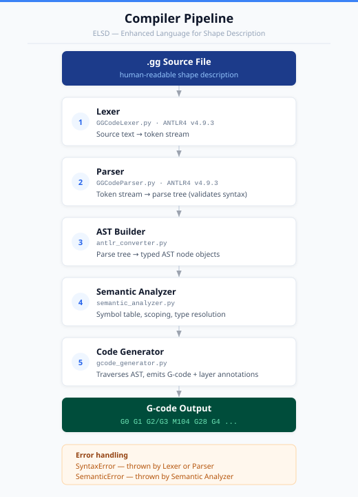
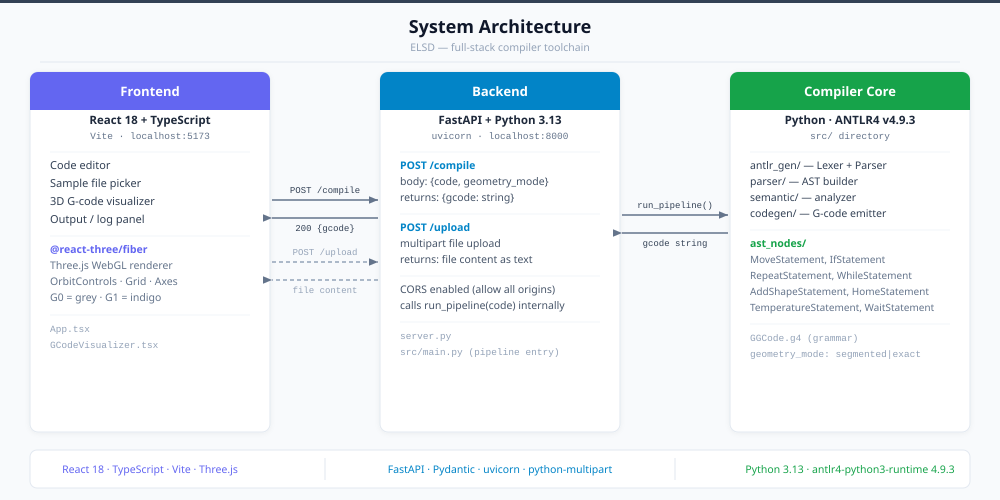
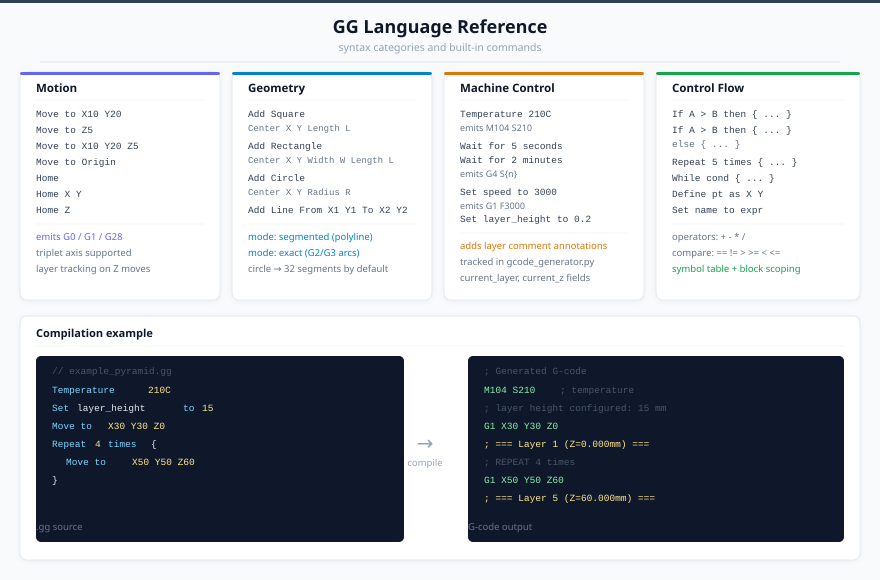

Visual documentation for the Enhanced Language for Shape Description compiler toolchain.
.gg source file is transformed into G-code, step by step.
The full compilation path from a human-readable .gg file to machine-ready G-code across 5 distinct stages.
SyntaxError on unknown characters. (GGCodeLexer.py)GGCodeParser.py)MoveStatement, RepeatStatement, etc. (antlr_converter.py)SemanticError on violations. (semantic_analyzer.py)gcode_generator.py)G0, G1, G2/G3, M104, G28, G4 …
The project is split into three independent layers. Frontend and backend communicate over HTTP; the compiler core is a pure Python library with no network code of its own.
POST /compile: accepts {code, geometry_mode}, returns {gcode}. POST /upload: accepts a multipart file, returns its text content.src/) — run_pipeline() chains all 5 stages. The geometry_mode parameter switches between polyline approximation (segmented) and true G2/G3 arcs (exact).
The top half organises every built-in command into four categories. The bottom half shows a .gg code snippet next to the G-code it produces after compilation.
Move to X Y, Move to Z, Move to X Y Z (triplet), Move to Origin, Home. Emit G1 / G28. Z moves trigger automatic layer annotation comments.Add Square, Add Rectangle, Add Circle, Add Line. Circles: 32-point polylines in segmented mode, or a single G2/G3 arc in exact mode.Temperature → M104, Wait for N seconds/minutes → G4, Set speed to N (feed rate), Set layer_height to N (tracked in gcode_generator.py).If/else, Repeat N times, While, Define / Set. Arithmetic: + - * /. Comparisons: == != > >= < <=. Variables are block-scoped.